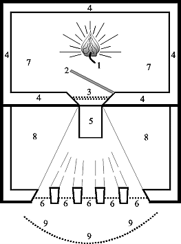

Self Inquiry
Disciple: Master! What is the means to gain the state of eternal bliss, ever devoid of misery? Master: Apart from the statement in the Veda that wherever there is body there is misery, this is also the direct experience of all people; therefore, one should enquire into one's true nature which is ever bodiless, and one should remain as such. This is the means to gaining that state. D: What is meant by saying that one should enquire into one's true nature and understand it? M: Experiences such as "I went; I came; I was; I did" come naturally to everyone. From these experiences, does it not appear that the consciousness "I" is the subject of those various acts? Enquiry into the true nature of that consciousness, and remaining as oneself is the way to understand, through enquiry, one's true nature. D: How is one to enquire: "Who am I?" M: Actions such as 'going' and 'coming' belong only to the body. And so, when one says "I went, I came", it amounts to saying that the body is "I". But, can the body be said to be the consciousness "I", since the body was not before it was born, is made up of the five elements, is non-existent in the state of deep sleep, and becomes a corpse when dead? Can this body which is inert like a log of wood be said to shine as "I" "I"? Therefore, the "I" consciousness which at first arises in respect of the body is referred to variously as self-conceit (tarbodham), egoity (ahankara), nescience (avidya), maya, impurity (mala), and individual soul (jiva) . Can we remain without enquiring into this? Is it not for our redemption through enquiry that all the scriptures declare that the destruction of "self-conceit" is release (mukti)? Therefore, making the corpse-body remain as a corpse, and not even uttering the word "I", one should enquire keenly thus: "Now, what is it that rises as 'I'". Then, there would shine in the Heart a kind of wordless illumination of the form 'I' 'I'. That is, there would shine of its own accord the pure consciousness which is unlimited and one, the limited and the many thoughts having disappeared. If one remains quiescent without abandoning that (experience), the egoity, the individual sense, of the form 'I am the body' will be totally destroyed, and at the end the final thought, viz. the 'I'-form also will be quenched like the fire that burns camphor*. The great sages and scriptures declare that this alone is release. * i.e., without leaving any sediment. D: When one enquires into the root of 'self conceit' which is of the form 'I', all sorts of different thoughts without number seem to rise; and not any separate 'I' thought. M: Whether the nominative case, which is the first case, appears or not, the sentences in which the other cases appear have as their basis the first case; similarly, all the thoughts that appear in the heart have as their basis the egoity which is the first mental mode 'I', the cognition of the form 'I am the body'; thus, it is the rise of egoity that is the cause and source of the rise of all other thoughts; therefore, if the self-conceit of the form of egoity which is the root of the illusory tree of samsara (bondage consisting of transmigration) is destroyed, all other thoughts will perish completely like an uprooted tree. Whatever thoughts arise as obstacles to one's sadhana (spiritual discipline) - the mind should not be allowed to go in their direction, but should be made to rest in one's self which is the Atman; one should remain as witness to whatever happens, adopting the attitude 'Let whatever strange things happen, happen; let us see!' This should be one's practice. In other words, one should not identify oneself with appearances; one should never relinquish one's self. This is the proper means for destruction of the mind (manonasa) which is of the nature of seeing the body as self, and which is the cause of all the aforesaid obstacles. This method which easily destroys egoity deserves to be called devotion (bhakti), meditation (dhyana), concentration (yoga), and knowledge (jnana). Because God remains of the nature of the Self, shining as 'I' in the heart, because the scriptures declare that thought itself is bondage, the best discipline is to stay quiescent without ever forgetting Him (God, the Self), after resolving in Him the mind which is of the form of the 'I'-thought, no matter by what means. This is the conclusive teaching of the Scriptures. D: Is enquiry only the means for removal of the false belief of selfhood in the gross body, or is it also the means for removal of the false belief of selfhood in the subtle and causal bodies? M: It is on the gross body that the other bodies subsist. In the false belief of the form "I am the body" are included all the three bodies consisting of the five sheaths. And destruction of the false belief of selfhood in the gross body is itself the destruction of the false belief of selfhood in the other bodies. So inquiry is the means to removal of the false belief of selfhood in all the three bodies. D: While there are different modifications of the internal organ, viz. manas (reflection), buddhi (intellect), chitta (memory) and ahankara (egoity), how can it be said that the destruction of the mind alone is release? M: In the books explaining the nature of the mind, it is thus stated: "The mind is formed by the concretion of the subtle portion of the food we eat; it grows with the passions such as attachment and aversion, desire and anger; being the aggregate of mind, intellect, memory and egoity, it receives the collective singular name 'mind', the characteristics that it bears are thinking, determining, etc.; since it is an object of consciousness (the self), it is what is seen, inert; even though inert, it appears as if conscious because of association with consciousness (like a red-hot iron ball); it is limited, non-eternal, partite, and changing like wax, gold, candle, etc.; it is of the nature of all elements (of phenomenal existence); its locus is the heart-lotus even as the loci of the sense of sight, etc., are the eyes, etc.; it is the adjunct of the individual soul thinking of an object, it transforms itself into a mode, and along with the knowledge that is in the brain, it flows through the five sense-channels, gets joined to objects by the brain (that is associated with knowledge), and thus knows and experiences objects and gains satisfaction. That substance is the mind". Even as one and the same person is called by different names according to the different functions he performs, so also one and the same mind is called by the different names: mind, intellect, memory, and egoity, on account of the difference in the modes - and not because of any real difference. The mind itself is of the form of all, i.e. of soul, God and world; when it becomes of the form of the Self through knowledge there is release, which is of the nature of Brahman: this is the teaching. D: If these four - mind, intellect, memory and egoity - are one and the same why are separate locations mentioned for them? M: It is true that the throat is stated to be the location of the mind, the face or the heart of the intellect, the navel of the memory, and the heart or sarvanga of the egoity; though differently stated thus yet, for the aggregate of these, that is the mind or internal organ, the location is the heart alone. This is conclusively declared in the Scriptures. D: Why is it said that only the mind which is the internal organ, shines as the form of all, that is of soul, God and world? M: As instruments for knowing the objects the sense organs are outside, and so they are called outer senses; and the mind is called the inner sense because it is inside. But the distinction between inner and outer is only with reference to the body; in truth, there is neither inner or outer. The mind's nature is to remain pure like ether. What is referred to as the heart or the mind is the collocation of the elements (of phenomenal existence) that appear as inner and outer. So there is no doubt that all phenomena consisting of names and forms are of the nature of mind alone. All that appear outside are in reality inside and not outside; it is in order to teach this that in the Vedas also all have been described as of the nature of the heart. What is called the heart is no other than Brahman. D: How can it be said that the heart is no other than Brahman? M: Although the self enjoys its experiences in the states of waking, dream, and deep sleep, residing respectively in the eyes, throat and heart, in reality, however, it never leaves its principal seat, the heart. In the heart-lotus which is of the nature of all, in other words in the mind-ether, the light of that self in the form 'I' shines. As it shines thus in everybody, this very self is referred to as the witness (sakshi) and the transcendent (turiya literally the fourth). The 'I'-less supreme Brahman which shines in all bodies as interior to the light in the form 'I' is the Self-ether (or knowledge-ether): that alone is the absolute Reality. This is the super-transcendent (turiyatita). Therefore, it is stated that what is called the heart s no other than Brahman. Moreover, for the reason that Brahman shines in the hearts of all souls as the Self, the name 'Heart' is given to Brahman*. The meaning of the word hridayam, when split thus 'hrit-ayam', is in fact Brahman. The adequate evidence for the fact that Brahman, which shines as the self, resides in the hearts of all is that all people indicate themselves by pointing to the chest when saying 'I'. * "In the hearts of all individual souls that which shines is Brahman and hence is called the Heart" --Brahma-gita. D: If the entire universe is of the form of mind, then does it not follow that the universe is an illusion? If that be the case, why is the creation of the universe mentioned in the Veda? M: There is no doubt whatsoever that the universe is the merest illusion. The principal purport of the Veda is to make known the true Brahman, after showing the apparent universe to be false. It is for this purpose that the Vedas admit the creation of the world and not for any other reason. Moreover, for the less qualified persons creation is taught, that is the phased evolution of prakriti (primal nature), mahat-tattva (the great intellect), tanmatras (the subtle essences), bhutas (the gross elements), the world, the body, etc., from Brahman: while for the more qualified simultaneous creation is taught, that is, that this world arose like a dream on account of one's own thoughts induced by the defect of not knowing oneself as the Self. Thus, from the fact that the creation of the world has been described in different ways it is clear that the purport of the Vedas rests only in teaching the true nature of Brahman after showing somehow or other the illusory nature of the universe. That the world is illusory, every one can directly know in the state of realization which is in the form of experience of one's bliss-nature. D: Is Self-experience possible for the mind, whose nature is constant change? M: Since sattva-guna (the constituent of prakriti which makes for purity, intelligence, etc.) is the nature of mind, and since the mind is pure and undefiled like ether, what is called mind is, in truth, of the nature of knowledge. When it stays in that natural (i.e. pure) state, it has not even the name 'mind'. It is only the erroneous knowledge which mistakes one for another that is called mind. What was (originally) the pure sattva mind, of the nature of pure knowledge, forgets its knowledge-nature on account of nescience, gets transformed into the world under the influence of tamo-guna (i.e. the constituent of prakriti which makes for dullness, inertness, etc.), being under the influence of rajo-guna (i.e. the constituent of prakriti which makes for activity, passions, etc.), imagines "I am the body, etc.; the world is real", it acquires the consequent merit and demerit through attachment, aversion, etc., and, through the residual impressions (vasanas) thereof, attains birth and death. But the mind, which has got rid of its defilement (sin) through action without attachment performed in many past lives, listens to the teaching of scripture from a true guru, reflects on its meaning, and meditates in order to gain the natural state of the mental mode of the form of the Self, i.e. of the form 'I am Brahman' which is the result of the continued contemplation of Brahman. Thus will be removed the mind's transformation into the world in the aspect of tamo-guna, and its roving therein in the aspect of rajo-guna. When this removal takes place the mind becomes subtle and unmoving. It is only by the mind that is impure and is under the influence of rajas and tamas that Reality (i.e. the Self) which is very subtle and unchanging cannot be experienced; just as a piece of fine silk cloth cannot be stitched with a heavy crowbar, or as the details of subtle objects cannot be distinguished by the light of a lamp flame that flickers in the wind. But in the pure mind that has been rendered subtle and unmoving by the meditation described above, the Self-bliss (i.e. Brahman) will become manifest. As without mind there cannot be experience, it is possible for the purified mind endowed with the extremely subtle mode (vritti) to experience the Self-bliss, by remaining in that form (i.e. in the form of Brahman). Then, that one's self is of the nature of Brahman will be clearly experienced. D: Is the aforesaid Self-experience possible, even in the state of empirical existence, for the mind which has to perform functions in accordance with its prarabdha (the past karma which has begun to fructify)? M: A Brahmin may play various parts in a drama; yet the thought that he is a Brahmin does not leave his mind. Similarly, when one is engaged in various empirical acts there should be the firm conviction "I am the Self", without allowing the false idea "I am the body, etc." to rise. If the mind should stray away from its state, then immediately one should enquire, "Oh! Oh! We are not the body etc.! Who are we?" and thus one should reinstate the mind in that (pure) state. The enquiry "Who am I?" is the principal means to the removal of all misery and the attainment of the supreme bliss. When in this manner the mind becomes quiescent in its own state, Self-experience arises of its own accord, without any hindrance. Thereafter sensory pleasures and pains will not affect the mind. All (phenomena) will appear then, without attachment, like a dream. Never forgetting one's plenary Self-experience is real bhakti (devotion), yoga (mind-control), jnana (knowledge) and all other austerities. Thus say the sages. D: When there is activity in regard to works, we are neither the agents of those works nor their enjoyers. The activity is of the three instruments (i.e., the mind, speech, and body). Could we remain (unattached) thinking thus? M: After the mind has been made to stay in the Self which is its Deity, and has been rendered indifferent to empirical matters because it does not stray away from the Self, how can the mind think as mentioned above? Do not such thoughts constitute bondage? When such thoughts arise due to residual impressions (vasanas), one should restrain the mind from flowing that way, endeavour to retain it in the Self-state, and make it turn indifferent to empirical matters. One should not give room in the mind for such thoughts as: "Is this good? Or, is that good? Can this be done? Or, can that be done?" One should be vigilant even before such thoughts arise and make the mind stay in its native state. If any little room is given, such a (disturbed) mind will do harm to us while posing as our friend; like the foe appearing to be a friend, it will topple us down. Is it not because one forgets one's Self that such thoughts arise and cause more and more evil? While it is true that to think through discrimination, "I do not do anything; all actions are performed by the instruments", is a means to prevent the mind from flowing along thought vasanas, does it not also follow that only if the mind flows along thought vasanas that it must be restrained through discrimination as stated before? Can the mind that remains in the Self-state think as 'I' and as 'I behave empirically thus and thus'? In all manner of ways possible one should endeavour gradually not to forget one's (true) Self that is God. If that is accomplished, all will be accomplished. The mind should not be directed to any other matter. Even though one may perform, like a mad person, the actions that are the result of prarabdha-karma, one should retain the mind in the Self-state without letting the thought 'I do' arise. Have not countless bhaktas (devotees) performed their numerous empirical functions with an attitude of indifference? D: What is the real purpose of sannyasa (renunciation)? M: Sannyasa is only the renunciation of the 'I' thought, and not the rejection of the external objects. He who has renounced (the "I" thought) thus remains the same whether he is alone or in the midst of the extensive samsara (empirical world). Just as when the mind is concentrated on some object, it does not observe other things even though they may be proximate, so also, although the sage may perform any number of empirical acts, in reality he performs nothing, because he makes the mind rest in the Self without letting the 'I' thought arise. Even as in a dream one appears to fall head downwards, while in reality one is unmoving, so also the ignorant person, i.e., the person for whom the 'I' thought has not ceased, although he remains alone in constant meditation, is in fact one who performs all empirical actions*. Thus the wise ones have said. * Like those who listen to a story with their attention fixed elsewhere, the mind whose residual impressions have worn away does not really function even if it appears to do so. The mind that is not free from residual impressions really functions even if it does not appear to do so; this is like those who while remaining stationary imagine in their dreams that they climb up a hill and fall therefrom. D: The mind, sense-organs, etc., have the ability to perceive; yet why are they regarded as perceived objects? M:
|
|
| Drik - (Knower) | Drisya - (Known object) |
| 1. The seer | Pot (i.e. the seen object) |
|
Further |
|
| 2. The eye organ | Body, Pot, etc. |
| 3. The sense of sight | The eye organ |
| 4. The mind | The sense of sight |
| 5. The individual soul | The mind |
| 6. Consciousness (the Self) | The individual soul |
|
D: How do egoity, soul, self, and Brahman come to be identified? M:
|
|
| The example | The exemplified |
| 1. The iron-ball | Egoity |
| 2. The heated iron-ball | The soul which appears as a superimposition on the Self |
| 3. The fire that is in the heated iron-ball | The light of consciousness, i.e. the immutable Brahman, which shines in the soul in everybody |
| 4. The flame of fire which remains as one | The all pervading Brahman which remains as one |
|
Just as in the wax-lump that is with the smith numerous and varied metal-particles lie included and all of them appear to be one wax-lump, so also in deep sleep the gross and subtle bodies of all the individual souls are included in the cosmic maya which is nescience, of the nature of sheer darkness, and since the souls are resolved in the Self becoming one with it, they see everywhere darkness alone. From the darkness of sleep, the subtle body, viz. egoity, and from that (egoity) the gross body arise respectively. Even as the egoity arises, it appears superimposed on the nature of the Self, like the heated iron-ball. Thus, without the soul (jiva) which is the mind or egoity that is conjoined with the Consciousness-light, there is no witness of the soul, viz. the Self, and without the Self there is no Brahman that is the All-witness. Just as when the iron ball is beaten into various shapes by the smith, the fire that is in it does not change thereby in any manner, even so the soul may be involved in ever so many experiences and undergo pleasures and pains, and yet the Self-light that is in it does not change in the least thereby, and like the ether it is the all-pervasive pure knowledge that is one, and it shines in the heart as Brahman. D: How is one to know that in the heart the Self itself shines as Brahman? M: Just as the elemental ether within the flame of a lamp is known to fill without any difference and without any limit both the inside and the outside of the flame, so also the knowledge-ether that is within the Self-light in the heart, fills without any difference and without any limit both the inside and the outside of that Self-light. This is what is referred to as Brahman. D: How do the three states of experience, the three bodies, etc., which are imaginations, appear in the Self-light which is one, impartite and self-luminous? Even if they should appear, how is one to know that the Self alone remains ever unmoving? M: 
|
|
| The Example | The Exemplified |
| 1. The Lamp | The Self |
| 2. The door | Sleep |
| 3. The door-step | Mahat-tattva |
| 4. The inner wall | Nescience or the causal body |
| 5. The mirror | The egoity |
| 6. The windows | The five cognitive sense-organs |
| 7. The inner chamber | Deep sleep in which the causal body is manifest |
| 8. The middle chamber | Dream in which the subtle body is manifest |
| 9. The outer court | Waking state in which the gross body is manifest |
|
The Self which is the lamp (1) shines of its own accord in the inner chamber, i.e., the causal body (7) that is endowed with nescience as the inner wall (4) and sleep as the door (2); when by the vital principle as conditioned by time, karma, etc., the sleep-door is opened, there occurs a reflection of the Self in the egoity-mirror (5) that is placed next to the door-step - Mahat-tattva; the egoity-mirror thus illumines the middle chamber, i.e., the dream state (8), and, through the windows which are the five cognitive sense-organs (6), the outer court, i.e., the waking state. When, again, by the vital principle as conditioned by time, karma, etc., the sleep-door gets shut, the egoity ceases along with waking and dream, and the Self alone ever shines. The example just given explains how the Self is unmoving, how there is difference between the Self and the egoity and how the three states of experience, the three bodies, etc., appear. D: Although I have listened to the explanation of the characteristics of enquiry in such great detail, my mind has not gained even a little peace. What is the reason for this? M: The reason is the absence of strength or one-pointedness of the mind. D: What is the reason for the absence of mental strength? M: The means that make one qualified for enquiry are meditation, yoga, etc. One should gain proficiency in these through graded practice, and thus secure a stream of mental modes that is natural and helpful. When the mind that has in this manner become ripe, listens to the present enquiry, it will at once realize its true nature which is the Self, and remain in perfect peace, without deviating from that state. To a mind which has not become ripe, immediate realization and peace are hard to gain through listening to enquiry. Yet, if one practices the means for mind-control for some time, peace of mind can be obtained eventually. D: Of the means for mind-control, which is the most important? M: Breath-control is the means for mind-control. D: How is breath to be controlled? M: Breath can be controlled either by absolute retention of breath (kevala-kumbhaka) or by regulation of breath (pranayama). D: What is absolute retention of breath? M: It is making the vital air stay firmly in the heart even without exhalation and inhalation. This is achieved through meditation on the vital principle, etc. D: What is regulation of breath? M: It is making the vital air stay firmly in the heart through exhalation, inhalation, and retention, according to the instructions given in the yoga texts. D: How is breath-control the means for mind-control? M: There is no doubt that breath-control is the means for mind-control, because the mind, like breath, is a part of air, because the nature of mobility is common to both, because the place of origin is the same for both, and because when one of them is controlled the other gets controlled. D: Since breath-control leads only to quiescence of the mind (manolaya) and not to its destruction (manonasa), how can it be said that breath-control is the means for enquiry which aims at the destruction of mind? M: The scriptures teach the means for gaining Self-realization in two modes - as the yoga with eight limbs (ashtanga-yoga) and as knowledge with eight limbs (ashtanga-jnana). By regulation of breath (pranayama) or by absolute retention thereof (kevala-kumbhaka), which is one of the limbs of yoga, the mind gets controlled. Without leaving the mind at that, if one practises the further discipline such as withdrawal of the mind from external objects (pratyahara), then at the end, Self-realization which is the fruit of enquiry will surely be gained. D: What are the limbs of yoga? M: Yama, niyama, asana, ,pranayama, pratyahara, dharana, dhyana, and samadhi. Of these - (1) Yama:- this stands, for the cultivation of such principles of good conduct as non-violence (ahimsa), truth (satya), non-stealing (asteya), celibacy (brahmacharya), and non-possession (apari-graha). (2) Niyama:- this stands for the observance of such rules of good conduct as purity (saucha), contentment (santosha), austerity (tapas), study of the sacred texts (svadhyaya), and devotion to God (Isvara-pranidhana)*. (3) Asana:- Of the different postures, eighty-four are the main ones. Of these, again, four, viz., simha, bhadra, padma, and siddha** are said to be excellent. Of these too, it is only siddha, that is the most excellent. Thus the yoga-texts declare. (4) Pranayama:- According to the measures prescribed in the sacred texts, exhaling the vital air is rechaka, inhaling is puraka and retaining it in the heart is kumbhaka. As regards 'measure', some texts say that rechaka and puraka should be equal in measure, and kumbhaka twice that measure, while other texts say that if rechaka is one measure, puraka should be of two measures, and kumbhaka of four. By 'measure' what is meant is the time that would be taken for the utterance of the Gayatrimantra once. Thus pranayama consisting of rechaka, puraka, and kumbhaka, should be practised daily according to ability, slowly and gradually. Then, there would arise for the mind a desire to rest in happiness without moving. After this, one should practise pratyahara. (5) Pratyahara:- This is regulating the mind by preventing it from flowing towards the external names and forms. The mind, which had been till then distracted, now becomes controlled. The aids in this respect are (1) meditation on the pranava, (2) fixing the attention betwixt the eyebrows, (3) looking at the tip of the nose, and (4) reflection on the nada. The mind that has thus become one-pointed will be fit to stay in one place. After this, dharana should be practised. (6) Dharana:- This is fixing the mind in a locus which is fit for meditation. The loci that are eminently fit for meditation are the heart and Brahma-randhra (aperture in the crown of the head). One should think that in the middle of the eight-petalled lotus*** that is at this place there shines, like a flame, the Deity which is the Self, i.e. Brahman, and fix the mind therein. After this, one should meditate. (7) Dhyana:- This is meditation, through the 'I am He' thought, that one is not different from the nature of the aforesaid flame. Even, thus, if one makes the enquiry 'Who am I?', then, as the Scripture declares, "The Brahman which is everywhere shines in the heart as the Self that is the witness of the intellect", one would realize that is the Divine Self that shines in the heart as 'I-I'. This mode of reflection is the best meditation. (8) Samadhi:- As a result of the fruition of the aforesaid meditation, the mind gets resolved in the object of meditation without harbouring the ideas 'I am such and such; I am doing this and this'. This subtle state in which even the thought 'I-I' disappears is samadhi. If one practises this every day, seeing to it that sleep does not supervene, God will soon confer on one the supreme state of quiescence of mind. * The aim of yama and niyama is the attainment of all good paths
open to those eligible for moksha. For more details see works like the
Yoga-sutra, Hathayoga-dipika. D: What is the purport of the teaching that in pratyahara one should meditate on the pranava? M: The purport of prescribing meditation on the pranava is this. The pranava is Omkara consisting of three and a half matras, viz., a, u, m, and ardha-matra. of these, a stands for the waking state, Visva-jiva, and the gross body; u stands for the dream-state Taijasa-jiva, and the subtle body; m stands for the sleep-state, Prajnajiva and the causal body; the ardha-matra represents the Turiya which is the self or 'I'-nature; and what is beyond that is the state of Turiyatita, or pure Bliss. The fourth state which is the state of 'I'-nature was referred to in the section on meditation (dhyana): this has been variously described - as of the nature of amatra which includes the three matras, a, u, and m; as maunakshara (silence syllable); as ajapa (as muttering without muttering) and as the Advaita-mantra which is the essence of all mantras such as panchakshara. In order to get at this true significance, one should meditate on the pranava. This is meditation which is of the nature of devotion consisting in reflection on the truth of the Self. The fruition of this process is samadhi which yields release which is the state of unsurpassed bliss. The revered Gurus also have said that release is to be gained only by devotion which is of the nature of reflection on the truth of the Self. D : What is the purport of the teaching that one should meditate, through the 'I am He' thought, on the truth that one is not different from the self-luminous Reality that shines like a flame? M: (A) The purport of teaching that one should cultivate the idea that one is not different from the self-luminous Reality is this: Scripture defines meditation in these words, "In the middle of the eight-petalled heart-lotus which is of the nature of all, and which is referred to as Kailasa, Vaikundha, and Parama-pada, there is the Reality which is of the size of the thumb, which is dazzling like lightning and which shines like a flame. By meditating on it, a person gains immortality". From this we should know that by such meditation one avoids the defects of (1) the thought of difference, of the form 'I am different, and that is different', (2) the meditation on what is limited, (3) the idea that the real is limited, and (4) that it is confined to one place. (B) The purport of teaching that one should meditate with the 'I am He' thought is this: sahaham: soham; sah the supreme Self, aham the Self that is manifest as 'I'. The jiva which is the Shiva-linga resides in the heart-lotus which is its seat situated in the body which is the city of Brahman; the mind which is of the nature of egoity, goes outward identifying itself with the body, etc. Now the mind should be resolved in the heart, i.e. the I-sense that is placed in the body, etc., should be got rid of; when thus one enquires 'Who am I?', remaining undisturbed, in that state the Self-nature becomes manifest in a subtle manner as 'I-I'; that self-nature is all and yet none, and is manifest as the supreme Self everywhere without the distinction of inner and outer; that shines like a flame, as was stated above, signifying the truth 'I am Brahman'. If, without meditating on that as being identical with oneself, one imagines it to be different, ignorance will not leave. Hence, the identity-meditation is prescribed. If one meditates for a long time, without disturbance, on the Self ceaselessly, with the 'I am He' thought which is the technique of reflection on the Self, the darkness of ignorance which is in the heart and all the impediments which are but the effects of ignorance will he removed, and the plenary wisdom will be gained*. Thus, realizing the Reality in the heart-cave which is in the city (of Brahman), viz. the body, is the same as realizing the all-perfect God. In the city with nine gates, which is the body, the wise one resides at ease**. The body is the temple; the jiva is God (Shiva). If one worships him with the 'I am He' thought, one will gain release. The body which consists of the five sheaths is the cave, the supreme that resides there is the lord of the cave. Thus the scriptures declare. Since the Self is the reality of all the gods, the meditation on the Self which is oneself is the greatest of all meditations. All other meditations are included in this. It is for gaining this that the other meditations are prescribed. So, if this is gained, the others are not necessary. Knowing one's Self is knowing God. Without knowing one's Self that meditates, imagining that there is a deity which is different and meditating on it, is compared by the great ones to the act of measuring with one's foot one's own shadow, and to the search for a trivial conch after throwing away a priceless gem that is already in one's possession***. * If meditation in the form 'I am Shiva' (Shivoham bhavana), which
prevents the thought going outwards, is practised always, samadhi will
come about.- Vallalar. D: Even though the heart and the Brahmarandhra alone are the loci fit for meditation, could one meditate, if necessary, on the six mystic centres (adharas)? M: The six mystic centres, etc., which are said to be loci of meditation, are but products of imagination. All these are meant for beginners in yoga. With reference to meditation on the six centres, the Shiva-yogins say, "God, who is of the nature of the non-dual, plenary, consciousness-self, manifests, sustains and resolves us all. It is a great sin to spoil that Reality by superimposing on it various names and forms such as Ganapati, Brahma, Vishnu, Rudra, Mahesvara, and Sadashiva", and the Vedantins declare, "All those are but imaginations of the mind". Therefore, if one knows one's Self which is of the nature of consciousness that knows everything, one knows everything. The great ones have also said: "When that One is known as it is in Itself, all that has not been known becomes known". If we who are endowed with various thoughts meditate on God that is the Self we would get rid of the plurality of thoughts by that one thought; and then even that one thought would vanish. This is what is meant by saying that knowing one's Self is knowing God. This knowledge is release. D: How is one to think of the Self? M: The Self is self-luminous without darkness and light, and is the reality which is self-manifest. Therefore, one should not think of it as this or as that. The very thought of thinking will end in bondage. The purport of meditation on the Self is to make the mind take the form of the Self. In the middle of the heart-cave the pure Brahman is directly manifest as the Self in the form 'I-I'. Can there be greater ignorance than to think of it in manifold ways, without knowing it as aforementioned? D: It was stated that Brahman is manifest as the Self in the form 'I-I', in the heart. To facilitate an understanding of this statement, can it be still further explained? M: Is it not within the experience of all that during deep sleep, swoon, etc., there is no knowledge whatsoever, i.e. neither self-knowledge nor other-knowledge? Afterwards, when there is experience of the form "I have woken up from sleep" or "I have recovered from swoon" - is that not a mode of specific knowledge that has arisen from the aforementioned distinctionless state? This specific knowledge is called vijnana. This vijnana becomes manifest only as pertaining to either the Self or the not-self, and not by itself. When it pertains to the Self, it is called true knowledge, knowledge in the form of that mental mode whose object is the Self, or knowledge which has for its content the impartite (Self); and when it relates to the not-self, it is called ignorance. The state of this vijnana, when it pertains to the Self and is manifest as of the form of the Self, is said to be the 'I'-manifestation. This manifestation cannot take place as apart from the Real (i.e. the Self). It is this manifestation that serves as the mark for the direct experience of the Real. Yet, this by itself cannot constitute the state of being the Real. That, depending on which this manifestation takes place is the basic reality which is also called prajnana. The Vedantic text "prajnanam brahma" teaches the same truth. Know this as the purport of the scripture also. The Self which is self-luminous and the witness of everything manifests itself as residing in the vijnanakosa (sheath of the intellect). By the mental mode which is impartite, seize this Self as your goal and enjoy it as the Self. D: What is that which is called the inner worship or worship of the attributeless? M: In texts such as the Ribhu-gita, the worship of the attributeless has been elaborately explained (as a separate discipline). Yet, all disciplines such as sacrifice, charity, austerity, observance of vows, japa, yoga, and puja, are, in effect, modes of meditation of the form 'I am Brahman'. So, in all the modes of disciplines, one should see to it that one does not stray away from the thought 'I am Brahman'. This is the purport of the worship of the attributeless. D: What are the eight limbs of knowledge (jnana-ashtanga)? M: The eight limbs are those which have been already mentioned, viz., yama, niyama, etc. but differently defined. Of these - (1) Yama:-This is controlling the aggregate of sense-organs, realizing the defects that are present in the world consisting of the body, etc. (2) Niyama:- This is maintaining a stream of mental modes that relate to the Self and rejecting the contrary modes. In other words, it means love that arises uninterruptedly for the supreme Self. (3) Asana:- That with the help of which constant meditation on Brahman is made possible with ease is asana. (4) Pranayama:- Rechaka (exhalation) is removing the two unreal aspects of name and form from the objects constituting the world, the body etc., puraka (inhalation) is grasping the three real aspects, existence, consciousness and bliss, which are constant in those objects, and kumbhaka is retaining those aspects thus grasped. (5) Pratyahara:- This is preventing name and form which have been removed from re-entering the mind. (6) Dharana:- This is making the mind stay in the heart, without straying outward, and realizing that one is the Self itself which is existence-consciousness-bliss. (7) Dhyana:- This is meditation of the form 'I am only pure consciousness'. That is, after leaving aside the body which consists of five sheaths, one enquires 'Who am I'?, and as a result of that, one stays as 'I' which shines as the Self. (8) Samadhi:- When the 'I'-manifestation also ceases, there is (subtle) direct experience. This is samadhi. For the pranayama, etc., detailed here, the disciplines such as asana, etc., mentioned in connection with yoga, are not necessary. The limbs of knowledge may be practised at all places and at all times. Of yoga and knowledge, one may follow whichever is pleasing to one, or both, according to circumstances. The great teachers say that forgetfulness is the root of all evil, and is death for those who seek release*; so one should rest the mind in one's Self and should never forget the Self : this is the aim. If the mind is controlled, all else can be controlled. The distinction between yoga with eight limbs and knowledge with eight limbs has been set forth elaborately in the sacred texts; so only the substance of this teaching has been given here. * Death or Kala is the giving up on this earth of the contemplation of the Self which should never be given up even the least bit. - Vivekachudamani. D: Is it possible to practise at the same time the pranayama belonging to yoga and the pranayama pertaining to knowledge? M: So long as the mind has not been made to rest in the heart, either through absolute retention (kevala-kumbhaka) or through enquiry, rechaka, puraka, etc., are needed. Hence, the pranayama of yoga is to be practised during training, and the other pranayama may be practised always. Thus, both may be practised. It is enough if the yogic pranayama is practised till skill is gained in absolute retention. D: Why should the path to release be differently taught? Will it not create confusion in the minds of aspirants? M: Several paths are taught in the Vedas to suit the different grades of qualified aspirants. Yet, since release is but the destruction of mind, all efforts have for their aim the control of mind. Although the modes of meditation may appear to be different from one another, in the end all of them become one. There is no need to doubt this. One may adopt that path which suits the maturity of one's mind. The control of prana which is yoga, and the control of mind which is jnana* - these are the two principal means for the destruction of mind. To some, the former may appear easy, and to others the latter. Yet, jnana is like subduing a turbulent bull by coaxing it with green grass, while yoga is like controlling through the use of force. Thus the wise ones say: of the three grades of qualified aspirants, the highest reach the goal by making the mind firm in the Self through determining the nature of the real by Vedantic enquiry and by looking upon one's self and all things as of the nature of the real; the mediocre by making the mind stay in the heart through kevala-kumbhaka and meditating for a long time on the real, and the lowest grade, by gaining that state in a gradual manner through breath-control, etc. The mind should be made to rest in the heart till the destruction of the 'I'-thought which is of the form of ignorance, residing in the heart. This itself is jnana; this alone is dhyana also. The rest are a mere digression of words, digression of the texts. Thus the scriptures proclaim. Therefore, if one gains the skill of retaining the mind in one's Self through some means or other, one need not worry about other matters. The great teachers also have taught that the devotee is greater than the yogins** and that the means to release is devotion, which is of the nature of reflection on one's own Self***. Thus, it is the path of realizing Brahman that is variously called Dahara-vidya, Brahma-vidya, Atma-vidya, etc. What more can be said than this? One should understand the rest by inference. The Scriptures teach in different modes. After analysing all those modes the great ones declare this to be the shortest and the best means. * Seeing everything as Real according to the Scripture: I am Brahman
-one only without a second. D: By practising the disciplines taught above, one may get rid of the obstacles that are in the mind, viz. ignorance, doubt, error, etc., and thereby attain quiescence of mind. Yet, there is one last doubt. After the mind has been resolved in the heart, there is only consciousness shining as the plenary reality. When thus the mind has assumed the form of the Self, who is there to enquire? Such enquiry would result in self-worship. It would be like the story of the shepherd searching for the sheep that was all the time on his shoulders! M: The jiva itself is Shiva; Shiva Himself is the jiva. It is true that the jiva is no other than Shiva. When the grain is hidden inside the husk, it is called paddy; when it is de-husked, it is called rice. Similarly, so long as one is bound by karma one remains a jiva; when the bond of ignorance is broken, one shines as Shiva, the Deity. Thus declares a scriptural text. Accordingly, the jiva which is mind is in reality the pure Self; but, forgetting this truth, it imagines itself to be an individual soul and gets bound in the shape of mind. So its search for the Self, which is itself, is like the search for the sheep by the shepherd. But still, the jiva which has forgotten its self will not become the Self through mere mediate knowledge. By the impediment caused by the residual impressions gathered in previous births, the jiva forgets again and again its identity with the Self, and gets deceived, identifying itself with the body, etc. Will a person become a high officer by merely looking at him? Is it not by steady effort in that direction that he could become a highly placed officer? Similarly, the jiva, which is in bondage through mental identification with the body, etc., should put forth effort in the form of reflection on the Self, in a gradual and sustained manner; and when thus the mind gets destroyed, the jiva would become the Self*. The reflection on the Self which is thus practised constantly will destroy the mind, and thereafter will destroy itself like the stick that is used to kindle the cinders burning a corpse. It is this state that is called release. * Though the obstacles which cause the bondage of birth may be many, the root-cause for all such changes is ahankara. This root-cause must be destroyed for ever.- Vivekachudamani. D: If the jiva is by nature identical with the Self, what is it that prevents the jiva from realizing its true nature? M: It is forgetfulness of the jiva's true nature; this is known as the power of veiling. D: If it is true that the jiva has forgotten itself, how does the 'I'-experience arise for all? M: The veil does not completely hide the jiva*; it only hides the Self-nature of 'I' and projects the 'I am the body' notion; but it does not hide the Self's existence which is 'I', and which is real and eternal. * Ignorance cannot hide the basic 'I', but it hides the specific truth that the jiva is the Supreme (Self). D: What are the characteristics of the jivan-mukta (the liberated in life) and the videha-mukta (the liberated at death)? M: 'I am not the body; I am Brahman which is manifest as the Self. In me who am the plenary Reality*, the world consisting of bodies etc., are mere appearance, like the blue of the sky'. He who has realized the truth thus is a jivan-mukta. Yet so long as his mind has not been resolved, there may arise some misery for him because of relation to objects on account of prarabdha (karma which has begun to fructify and whose result is the present body), and as the movement of mind has not ceased there will not be also the experience of bliss. The experience of Self is possible only for the mind that has become subtle and unmoving as a result of prolonged meditation. He who is thus endowed with a mind that has become subtle, and who has the experience of the Self is called a jivan-mukta. It is the state of jivan-mukti that is referred to as the attributeless Brahman and as the Turiya. When even the subtle mind gets resolved, and experience of self ceases, and when one is immersed in the ocean of bliss and has become one with it without any differentiated existence, one is called a videha-mukta. It is the state of videha-mukti that is referred to as the transcendent attributeless Brahman and as the transcendent Turiya. This is the final goal. Because of the grades in misery and happiness, the released ones, the jivan-muktas and videha-muktas, may be spoken of as belonging to four categories - Brahmavid, - vara--variyan, and varishtha. But these distinctions are from the standpoint of the others who look at them; in reality, however, there are no distinctions in release gained through jnana. * If there is prolonged meditation that the worlds are an appearance in me who am the plenary Reality, where can ignorance stand? |
|